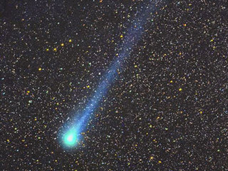
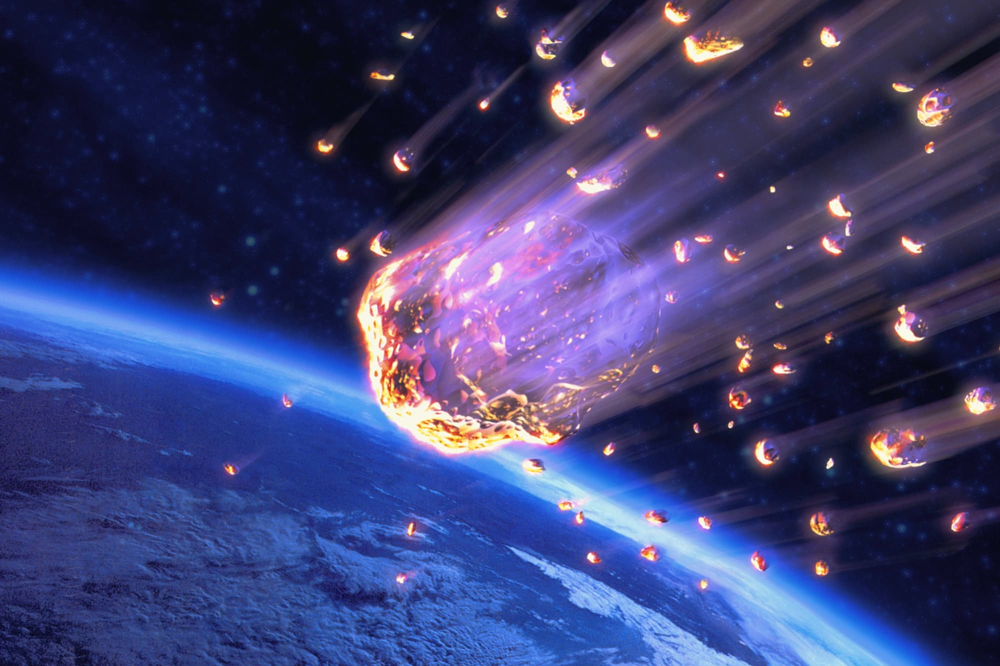

Comets

Comets are cosmic snowballs of frozen gases, rock, and dust that orbit the Sun. When frozen, they are the size of a small town. ... The dust and gases form a tail that stretches away from the Sun for millions of miles. There are likely billions of comets orbiting our Sun in the Kuiper Belt and even more distant Oort Cloud.
Meteor

Meteors, also known as shooting stars, are pieces of dust and debris from space that burn up in Earth's atmosphere, where they can create bright streaks across the night sky. When Earth passes through the dusty trail of a comet or asteroid's orbit, the many streaks of light in the sky are known as a meteor shower.
Proxima Centauri b

Proxima Centauri b (also called Proxima b[4][5] or Alpha Centauri Cb) is an exoplanet orbiting in the habitable zone of the red dwarf star Proxima Centauri, which is the closest star to the Sun and part of a triple star system.[6][7] It is approximately 1.28 parsecs or 4.2 light-years (4.0×1013 km) from Earth in the constellation Centaurus, making it and Proxima c the closest known exoplanets to the Solar System.